カリフォルニア沖で UFO を観測 : Michio Kaku : 我々の観測チームは人類の歴史を書き換えた
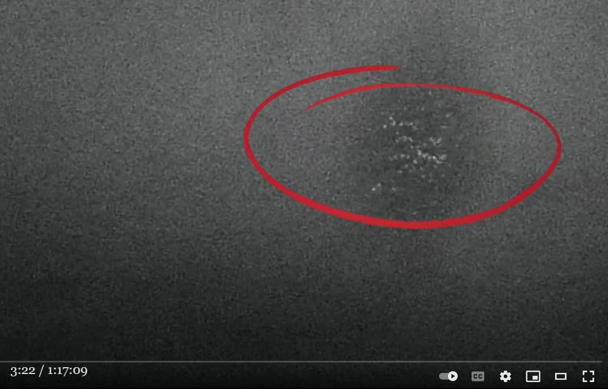 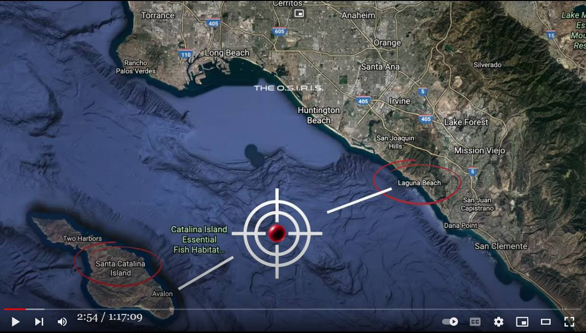
履歴
(2022-06-23) 追加 (2022-05-21) 追加 (2022-05-14) 作成前置き
- 冒頭のドキュメンタリー動画の予告編部分しか見ていないが、Michio Kaku がタイトルのような主張をしている。 - どうやら ・UFO を二箇所から同時に様々な波長領域をカバーする光学望遠鏡の組み合わせで観測し、客観的データとして記録した ・観測された UFO の表面温度は摂氏 -60度ほどでとても低い。 ・これにより、 UFO の決定的な証拠を手に入れた。この証拠は一切の仮定や条件なしに通用するから、UFO の存在の有無に関する従来からのあらゆる議論を終わらせるものだ ・この意味で、我々の観測チームは人類の歴史を書き換えたのだ という話らしい。 - なお、下の動画には音声書写（自動生成）が付与されていない。切り出し静止画
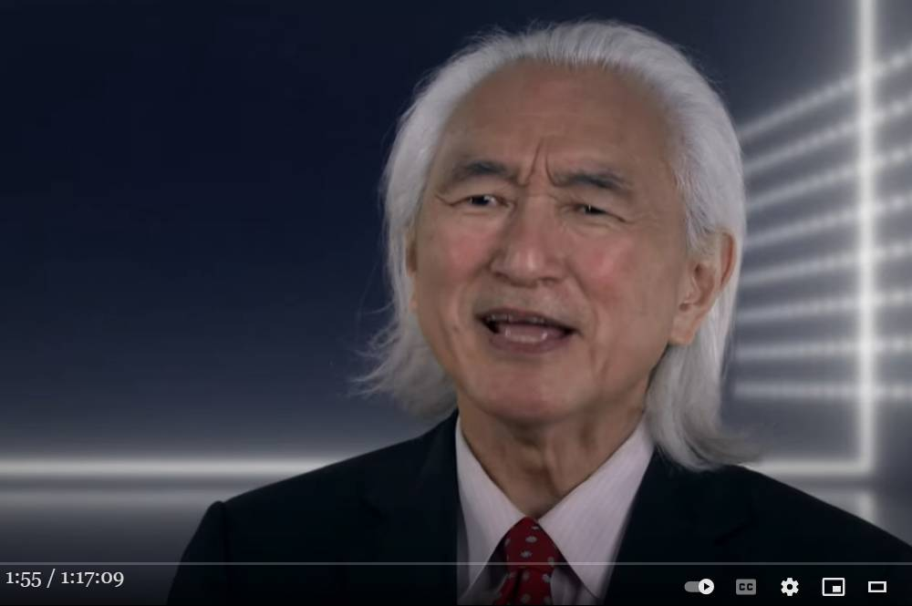 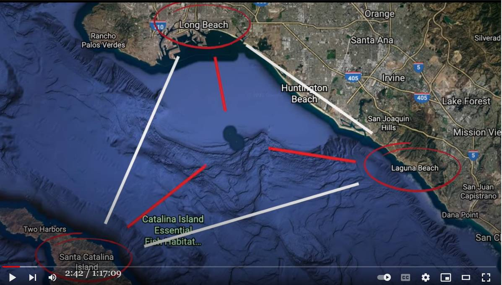 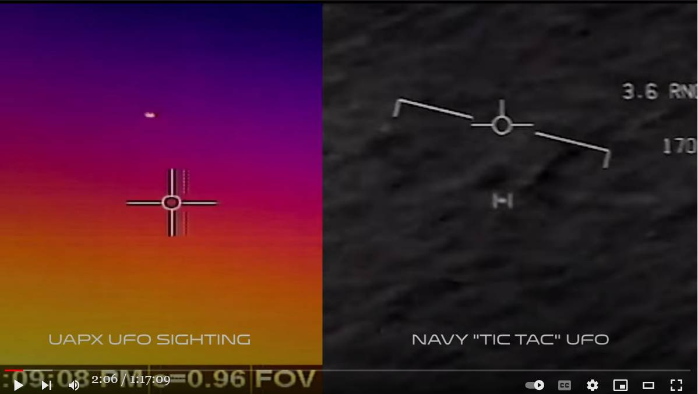 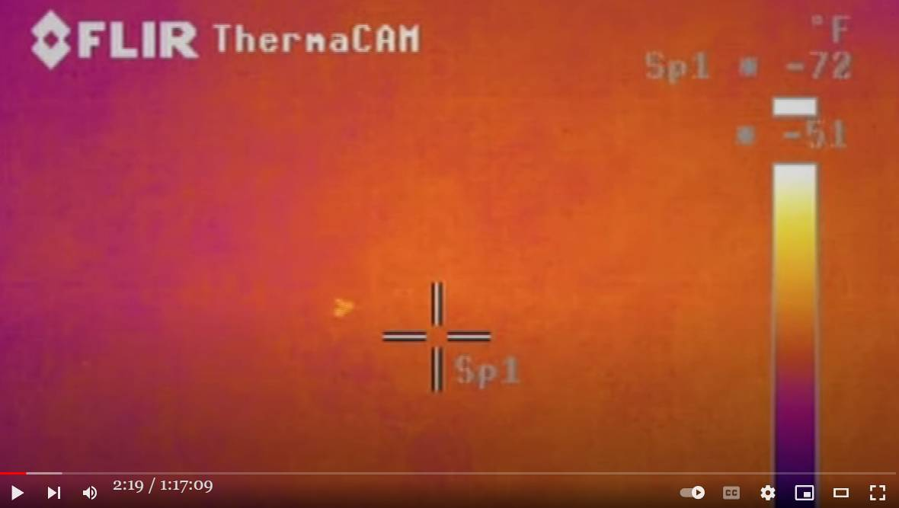動画(1:17:09)
A Tear in the Sky: Scientists Prove UFOs are a Real Unknown in a Stunner of a Documentaryコメント
- 予言するが、特殊な自然現象（大気の発光現象の類）だろう。この手の発光現象はこれまでも多数、動画撮影され youtube にも up されている。 - 表面温度がとても低い点については海軍の観測した tic-tac とも共通 (*1)している。また群れをなしている点でも共通する。 - それはともかく…。しばらく見ない間に Michio Kaku が予想外に老けていた。(*1)
国防省が公認した UFO 動画：飛行中の UFO の温度はたぶん氷点下 (2020-08-04) (2022-05-14)
(2022-05-21 begin)前置き
- 過去記事(2022-05-14)で- 予言するが、特殊な自然現象（大気の発光現象の類）だろう。この手の発光現象はこれまでも多数、動画撮影され youtube にも up されている。と述べたが、その具体例のひとつが下。下の事例は捏造の可能性はほぼゼロなので有用。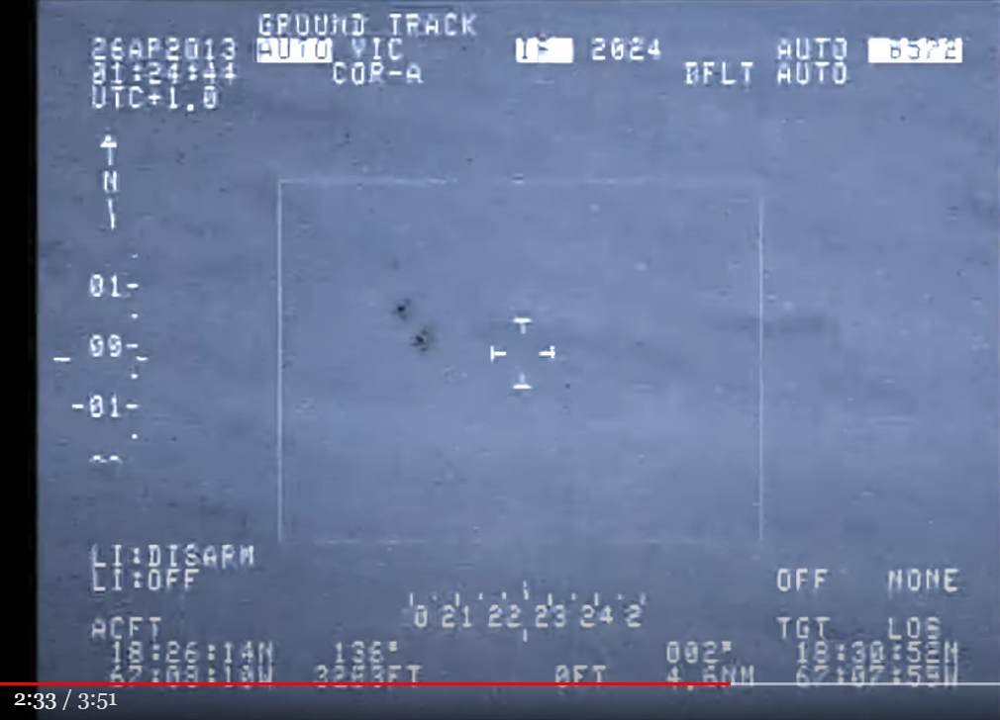 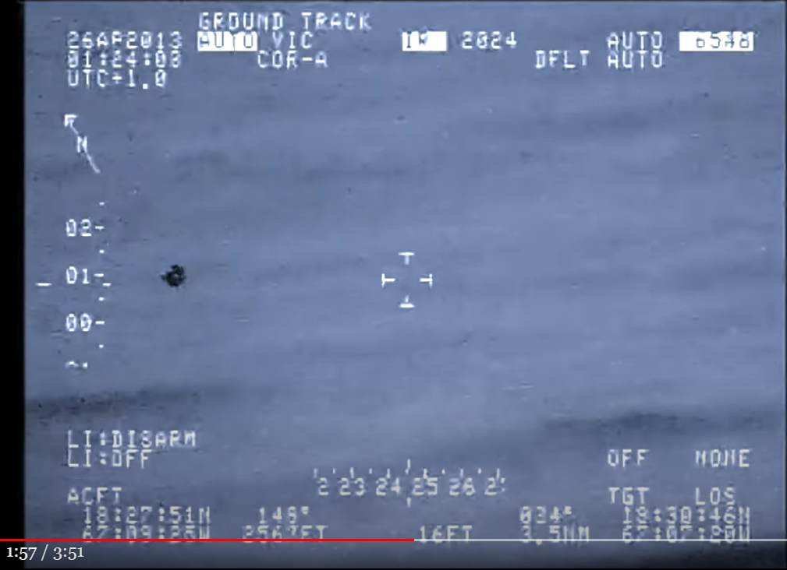 .... ・未確認の空中現象説に賛成。理由は… ・形状が通常の UFO とは全く異なる。 ・2個になったり 1個になったり、ほとんど消え去ったりという異様な挙動 ref: 2013-04-25, プエルトリコ：空港に出現した UFO → 未確認の空中現象？ (2020-12-29)(2022-05-21 end)
(2022-06-23 begin)前置き
- この観測チームの関係者の一人が、撮影した有料動画の宣伝のためにゲスト出現し、撮影した UFO の光景などについて語っている。UFO は複数回、出現し捉えられたと。手抜き
- 1:18:00 -- 具体的な描写 - その UFO の光景を言葉で表現すると… - a tear in the sky - we've been talking about it's something that opens and closes that's kind of like a tear. 1:19:04 because because part of watching the film is also the discovery you know you go along for the ride but what what you're 1:19:11 talking about what jimmy's talking about is this phenomenon that we captured um 1:19:18 towards the end of the of our it was the last day actually and it's basically 1:19:25 uh what what looked like a cloud that opened and closed and 1:19:32 let me just jump it's the title of the film yeah yeah which was funny you know 1:19:37 because i um i uh called uh i mean i uh 1:19:44 called the film a tear in the sky two years ago like i i 1:19:50 i didn't know i didn't i didn't change the title after our discovery or anything like that so 1:19:57 i for some reason i kind of was wanted to have something like something that's coming from the sky so i called it a 1:20:03 tear in the sky two years ago and of course so basically fast forward what we've been talking about it's something 1:20:09 that opens and closes that's kind of like a tear it looks it looked like a 1:20:15 little bit like a cloud and again all sorts of measurements and all sorts of correlations going on 1:20:21 but basically what's most intriguing is that uh there are actual objects in ther - 海軍が遭遇した tic-tac UFO にサイズ（30-50 ft.）を含めて酷似していたと。 1:24:10 kevin day and david fravor have been reporting but that's what was so crazy 1:24:17 crazy the objects that we captured on tape were the exact same size the range was 1:24:24 between 35 and 50 feet which was the exact same size as the tic 1:24:30 tacs that kevin day and fraver were talking about and the the scientific coalition of uaps 1:24:38 also had done studies on on the size and velocity and they also found that measurement 1:24:46 also to be around within that range 30 to 50 feet and same with dr knuth's paper also he 1:24:53 wrote about that and this is what we've calculated um on the objects in our movie as well i 1:25:00 mean crazy right so i mean we and the objects also some of them have the exact 1:25:06 same shape i mean now um uh again i'm not giving anything away - tic-tac UFO に似たものは tear in the sky から出現したものではなく、別の機会に撮影したもの。 1:25:33 i've seen the film three times now and i can't believe i'm asking this question but that object from the tear 1:25:41 no that's a separate that's a separate yeah yeah that's people saw that in the 1:25:46 in the in the uh trailer it looks exactly like the tic tac the navy tic 1:25:53 tac travels exactly in the same way against the wind uh so that was one because we captured 1:25:59 several things in the film so this was one event that was separate from the tear - なぜか、早朝にブレーカーが落ちて停電になった。 1:26:41 all so it happened at 3 59 a.m the that tear um 1:26:47 and exa like two minutes just before just before 3 59 a.m 1:26:53 all the flear cameras go out and wait a minute it's 3 59 a.m nobody's 1:27:00 there we're not plugging in any anything like sometimes you'd have a you 1:27:05 know blackout like if you're plugging in all of us because we had the camera crew we have a lot of lighting so sometimes音声
Ep. 1607 Caroline Coryコメント
- やはり、自然現象だと思える。空に複数の orb が生じる現象はこれまでも多数、撮影されてきたし、過去記事でもそれらの映像を取り上げた。たとえば…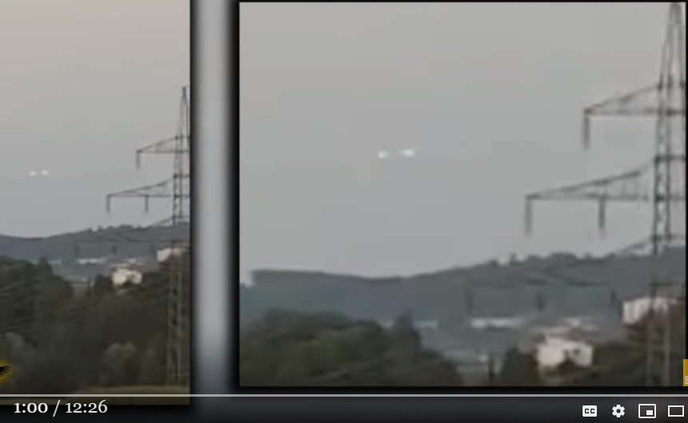 空中でふたつの光点が絡み合うシーンの動画 (2019-02-11)- 観測した UFO のサイズが 30-50 ft. だったというが、これは複数の orb が連なっていたために、その隙間を考慮せず一体のものと見たからではないか。 - 全長数マイルに及ぶとされる Phoenix Lights 事件の V字型 UFO でも光点の間から背後の星が透けてみえたり、光点の相互位置が大きく変化したり、入れ替わったりしたという複数の証言があるが、それらはどれも真剣に考慮されたことはない。 ・Phoenix Lights の光点群の輝きが弱まった頃に地上から目撃した人々が光点群の間から星が透けて見えたとか、水面下から見るような星の光のゆらめきが見えたと証言している。光点群の形が見ている間に変形したという証言も複数ある。過去記事(*1)で取り上げた。(*1)
現在の結論："Phoenix Lights" は確実に UFO ではない。たぶん自然現象だろう。 (2020-06-08) 【編集中】2017-04-10、Arizona の "Phoenix Lights"（V 字型超巨大 UFO）はたぶん自然現象だ。 （途中：その2） (2020-06-07) 1997-03-13、Arizona : "Phoenix Lights" の背後の星や月が掠れて見えた…という証言 （途中：その2） (2020-06-09) (2022-06-23 end)
初出
Michio Kaku : 我々の観測チームは人類の歴史を書き換えた （＋追加2） (2022-06-23)
2022-10-15 追記
- "Pheonix Lights" 事件について。
- 1997-03-13 の "Pheonix Lights" 事件でもライト（光点）を保持している機体が見えたという証言と、夜空の光点の間から星が掠れて透けて見えたという証言の両方がある。さらに光点の相対位置が入れ替わったとか、光点群の全体形状が大きく変化したという証言も複数ある。また当日の夕方に現地で撮影された山稜のすぐ上の光点群のビデオ画像にただの光点群のみが写っていて、光点群を保持する機体の類は一切、写っていなかった(*2)。 - これらを総合的に考慮するとこの事件と "Pheonix Lights" は共通しており、光点群の誤認だと結論づけるのが妥当だと私は見る。 ref: 1977-05-17, Tennessee : 互いに離れた地点にいた複数の警察が巨大な三角形 UFO を目撃 (2022-09-12)
1997-03-13, Phoenix Lights : 熟練パイロットの証言。UFO 本体は半透明で、反対側が揺らいで透けて見えた。 (2020-06-24)
(*2)
- 上で「当日の夕方に現地で撮影された山稜のすぐ上の光点群のビデオ画像にただの光点群のみが写っていて、光点群を保持する機体の類は一切、写っていなかった」と述べた件の詳細が下。
・日中に撮影された映像を TV 番組が放映。フレアではあり得ない証拠。しかも目撃された方向が真逆。2つの光点が出現。さらにもう一つが出現し高速で移動。 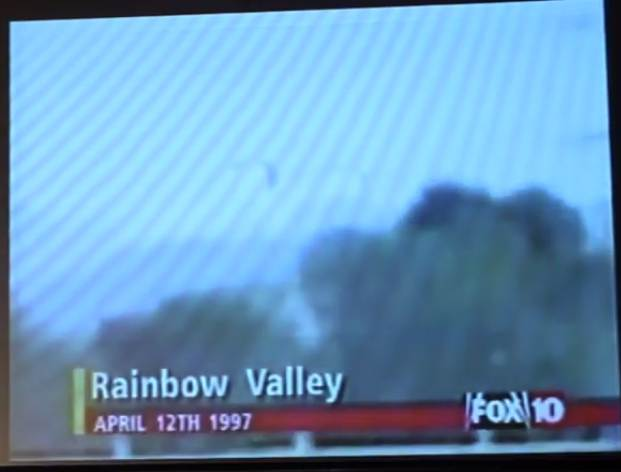 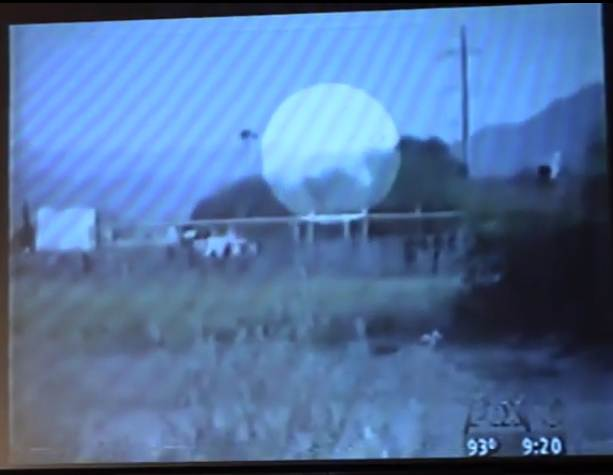 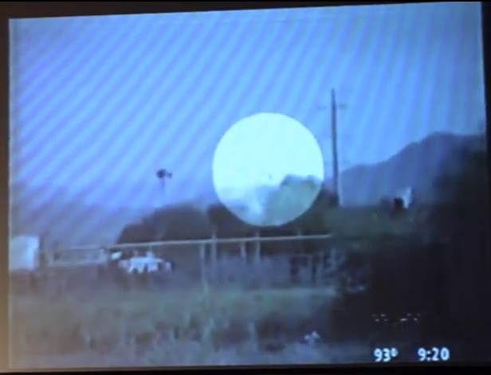講演動画（1:54:02）
・DR LYNNE KITEI - LECTURE ON THE PHOENIX LIGHTS MASS UFO SIGHTING ・499 views,Mar 6, 2020 ref: Dr. Lynne Kitei : "Phoenix Lights UFO" がフレアでない証拠のひとつ : 日中に撮影された映像 (2020-06-08)